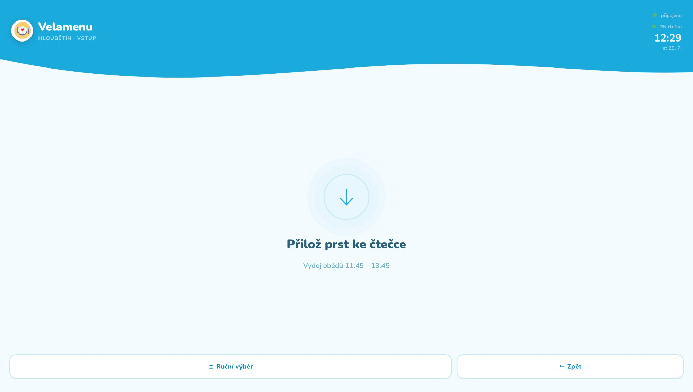
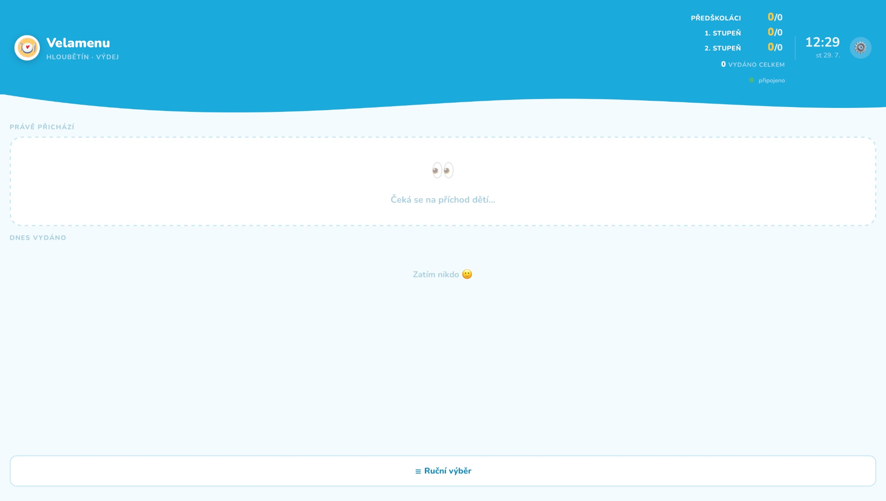
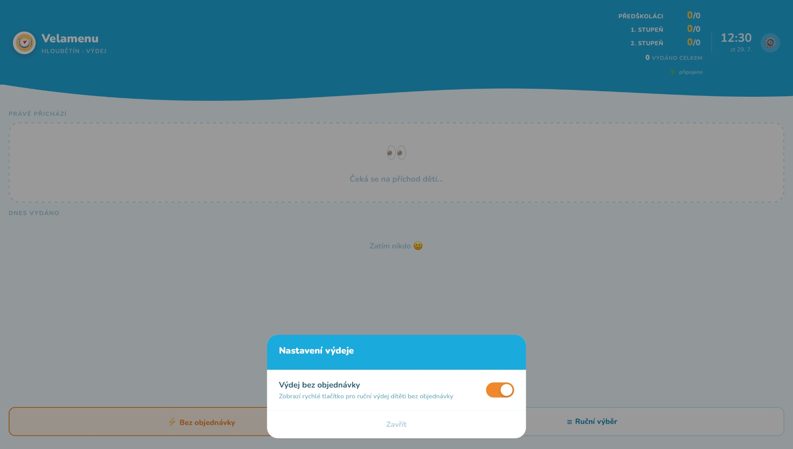

Ve školní jídelně je na výdej pár minut a u okénka stojí fronta dětí. Kuchařky do té doby hledaly jména na papíře a děti si nepamatovaly, co si objednaly. Chtěla jsem, aby stačilo přiložit prst ke čtečce a kuchyně hned viděla, komu co vydat.

Screenshoty jsou pořízené na počítači, ne přímo na tabletu, na kterém systém běží – proto jiné proporce než v reálném provozu.
Obědy si rodiny objednávají v aplikaci Velamenu. Chyběla druhá půlka – výdej. Navrhla jsem systém, který propojuje čtečku otisků prstů 2N, malý server na Raspberry Pi a dva tablety: jeden u vstupu do jídelny, druhý v kuchyni u výdejního okénka.
Projekt jsem vedla celý sama – od průzkumu API čtečky a schůzek s vedením školy přes návrh rozhraní až po ostré nasazení v jídelně. Kód jsem psala s pomocí Clauda Code: já jsem určovala logiku, chování a vzhled, AI překládala zadání do kódu a já ho testovala a nasazovala.
Hlavní otázka: jak navrhnout rozhraní, které funguje pod časovým tlakem, v hluku a pro lidi, kteří na něj nemají čas se dívat.
Mám tři skupiny uživatelů a každá potřebuje něco jiného.
Od předškoláků po devťáky. Nečtou dlouhé texty, nechtějí na nic klikat. Potřebují jedinou instrukci a jasnou zpětnou vazbu, že čtečka zafungovala.
Mají plné ruce a dívají se na tablet z metru a půl. Potřebují velký, okamžitě čitelný údaj: kdo přišel a jaké jídlo mu dát.
Potřebuje přehled, kolik jídel se vydalo, a jistotu, že výdej nespadne.
Z toho vyplývala priorita, podle které jsem rozhodovala všechno další: spolehlivost výdeje má přednost před novými funkcemi.
Od prvního prototypu drží aplikace několik pevných pravidel:

Tablet v kuchyni – přehled podle věkových skupin, „Právě přichází“ a „Dnes vydáno“
Výdejní tablet je rozdělený na dvě zóny: nahoře Právě přichází (dítě, které právě přiložilo prst), dole Dnes vydáno. V hlavičce běží průběžné počty podle skupin – předškoláci, 1. a 2. stupeň – takže kuchyně vidí, kolik jídel ještě zbývá.
Po nasazení v červnu se ukázalo, že realita jídelny je pestrejší než objednávkový systém. Přijde dítě, které si oběd zapomnělo objednat. Přijde nový žák, který ještě nemá otisk. Učitel s třídou na výletu se vrátí dřív.
Proto vznikl výdej bez objednávky – rychlé tlačítko, které kuchyně zapne v nastavení, když ho potřebuje. Ve výchozím stavu je skryté, aby neodvádělo pozornost od běžného průchodu.

Nastavení výdeje – přepínač „Výdej bez objednávky“
Ruční výběr jsem navrhla jako dva kroky – nejdřív osoba (s vyhledáváním a rozdělením na předškoláky, 1. a 2. stupeň a dospělé), potom jídlo z denní nabídky. Dva jednoduché kroky jsou pod tlakem rychlejší než jeden složitý formulář.
Původně měl server čtečku průběžně „obvolávat“ a ptát se, jestli někdo přiložil prst. Při nasazení se ukázalo, že to bez dražší licence nejde. Místo toho jsem využila automatizaci přímo ve čtečce: při přiložení prstu sama pošle zprávu serveru.
Výsledek je rychlejší a spolehlivější – tablet v kuchyni reaguje okamžitě, bez zpoždění a bez zbytečné zátěže sítě. Naučilo mě to, že omezení v hardwaru je často nápověda k lepšímu řešení, ne překážka.
Kuchařky už nehledají jména na papíře a děti nemusí nic hlásit – stačí přiložit prst.
Největší výzvou nebyl design ani kód, ale propojení tří systémů, které spolu nikdy mluvit neměly: čtečky, objednávek v Bubble a tabletů v jídelně. Naučila jsem se číst dokumentaci API, přemýšlet o výpadcích sítě a navrhovat tak, aby systém selhal „měkce“.
Kdybych začínala znovu, už před prvním prototypem bych s vedením uzavřela téma biometrických dat dětí – souhlasy, uložení a přístupová práva. Je to jediná část projektu, kterou nevyřeší kód.
Samoobsluhá verze s jedním tabletem pro pobočku Dědina – jiný provoz, jiný návrh.
Uložení vydaných obědů tak, aby přežily restart serveru, denní export pro kuchyni a kiosk režim na tabletech.